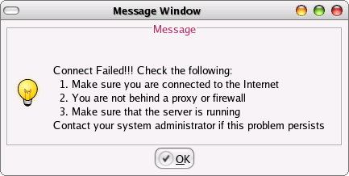

System requirements: Windows 98 or later version, CD-ROM drive.
Follow the steps to use the software:
- Insert the CD in the CD-ROM drive. The CD will automatically run the
program from the CD.
(If this is not the case for you, see the NOTE section below)
- A splash screen will arrive and will stay for about 5 seconds and
then vanish away. Then a window with two option buttons will arrive.
Select your appropriate choice for registration and click the 'Go'
button.
- A query window will appear before you. This window contains two
entry boxes. Enter your appropriate session in the box labeled 'Enter
Session'. Note that the program may automatically fill the rest of the
session entry for your convenience. Then enter your institution code in
the box labeled 'Enter Institution Code'. If you enter a valid
institution code, and if it is found in the institution code database,
then the name of the institution will be displayed just below the
institution code. As soon as the name of institution is found in the
database, a 'OK' button below the name of the institution will be
visible. Click the button to see the registration form.
-------------------------------------------------
NOTE
If the CD does not run the program, you will have to manually run it. To
do this, follow the steps:
-- Go to 'My Computer'
-- Right Click the CD-ROM icon and select 'Auto Play' option. If it does
not still run the program, double click the CD icon. The directory
listing will be displayed. Double click 'GRUNTIME' directory. Double
click 'bin' directory under 'GRUNTIME'. Double click the 'runproject'
or 'runproject.bat' file. It should run the software.
------------------------------------------------
-
Two windows titled
'Information Editor' and
'Student's Information Form (SIF)'
will arrive. You can click the 'Entry Form' button of the Information
Editor window to view the registration form.
-
Here you can fill information for students and save it and send it to
the education board directly online.
-
Enter appropriate information in the boxes as their labels say. You can
move between entry boxes using the 'TAB' (or Shift + TAB) key. Some
entry boxes are not editable so you need not do anything with them and
just go ahead to next entry.
-
You can view the subject code lists available by clicking on the 'View'
button at the bottom of the form.
-
There is a button 'Load Photo' below the form. This may be disabled by
default. This is becase Picture is not transferred by default. To enable
photo, click on 'Preferences' button in the 'Information Editor' window
and then by Checking (putting a tick mark) on the check button at the
right hand side of label 'Photo'. When you are done, click 'Close' to
close the 'Enable/Disable Entries' window. Now you can load/change photo
by clicking the 'Load Photo' button on the 'Student's Information Form
(SIF)' window.
-
When you are done with the form entry, you can save it by clicking the
'Save' button. The form will be verified and it everything seems Ok, you
will get a message saying that the form has been successfully saved.
-
If the form is successfully saved, you can see an entry of this form in
the 'Information Editor' window. You can edit already filled form by
selecting it and clicking on the 'Edit' button of the "Information
Editor" window.
-
You can save the current form and exit by clicking the 'Save and exit'
button. If you want to discard entries filled in and exit, you can click
'Exit without saving' button. If you try to close a window using the
cross button (x) in the window title bar, the program will assume that
you don't want to save modified information. The main registration form
window will issue a warning message. If you are sure you want to discard
changes, click 'Ok'.
-
You can submit filled/modified forms to the education board server by
clicking the 'Send' button of the "Information Editor" window. If you
click 'Send' button, a 'Enter Password' window will arrive. Enter the
password you got from Education Board for your institution. When you are
done with password, click the 'OK' button of the password window.
-
The progress of form transfer will be displayed in 'Online transfer'
window. If there is something wrong sending the form, the program will
issue a message before you.
Errors
1. The following window may arrive.

This may be happening for one or more of the following reasons:
1. You are not connected to the Internet
2. The server is not running in the Education Board
3. You may be behind a proxy or firewall.
Solutions:
1. If you use dialup internet connection, run the dialer and connect to
your internet service provider (ISP). If you are using broad band, the
connection may be down or your 'Default Gateway' settings in the TCP/IP
configuration may be wrong. Contact your system/network administrator
for fixing this problem. If you still encounter the previous problem,
go to next step.
2. Contact Education Board and make sure that their server is running.
If that is not running, you can't send forms. If the server is running
and still you get the previous error, go to next step.
3. If you use a broadband connection, you might be behind a proxy server
which is not allowing you to initiate a connection to the education
board server. Contact your Broadband service provider for this problem.
There may also be a firewall rule in your the Gateway machine of the
Broadband service provider which might not allow you to initiate
communication with the Education Board server.
4. If none of the above can fix your problem, write down the messages
appeared before you and contact the Education Board Computer Center for
the problem.